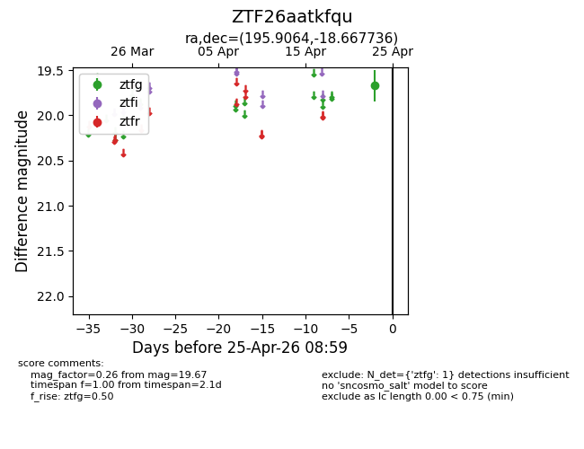
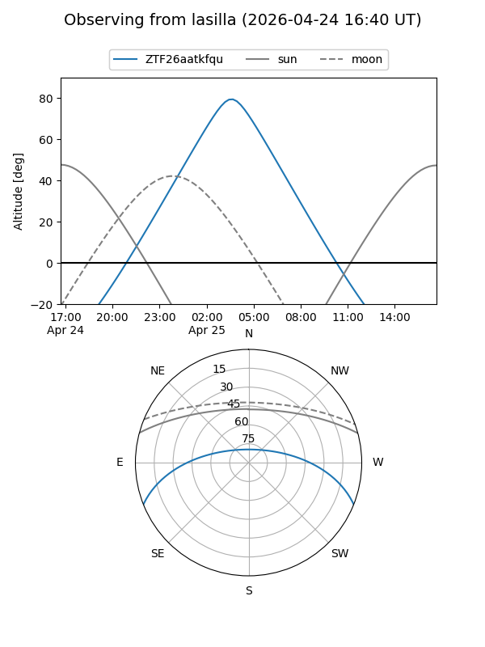
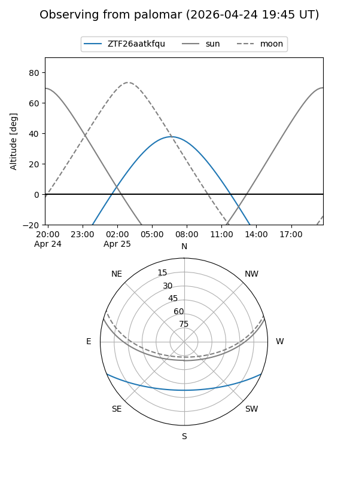

ZTF26aatkfqu
Target ZTF26aatkfqu at 2026-04-25 09:01
Aliases and brokers:
FINK: link
Lasair: link
ALeRCE: link
alt names
ZTF26aatkfqu (ztf,fink_ztf)
Coordinates:
equatorial (ra, dec) = 195.9064,-18.66774
equatorial (HMS+DMS) = 13:03:37.53,-18:40:03.85
galactic (l, b) = (306.9535,+44.10882)
Flags:
Photometry:
last ztfg=19.67
1 ztfg detections
Lightcurve

Visibility


Additional plots